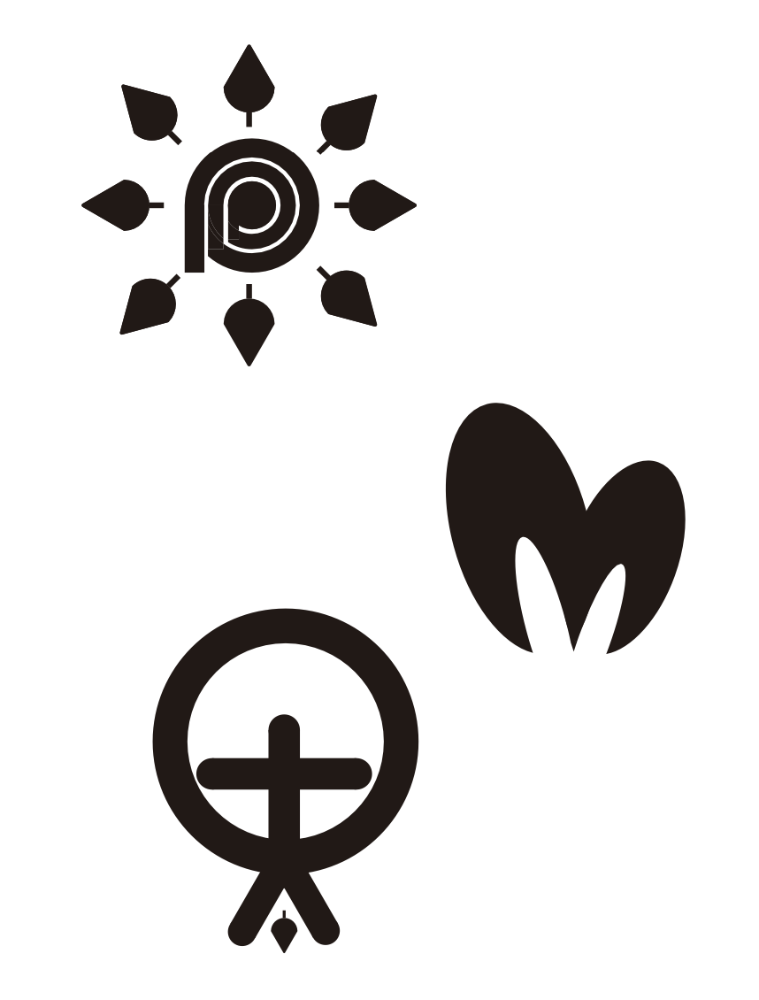

ようこそ、私のポートフォリオへ
クリエイティブな作品と技術力をご覧ください。
Self-introduction
こんにちは、[あなたの名前]です。
私は[あなたの専門分野]のプロフェッショナルで、[年数]年の経験があります。
[あなたの強み、パッション、目標などについて簡単に説明してください]
Works
Maya Modeling
Mayaを使い3Dモデリングを行いました。
制作アプリケーション：Maya2022

Logo Design
Illustratorを使い、自然をテーマにしたロゴを制作しました。
制作アプリケーション：Adobe Illustrator2023

Character Design
Illustratorを使い、”情報科学部"をテーマにオリジナルキャラクターを制作しました。
制作アプリケーション：Adobe Illustrator2023